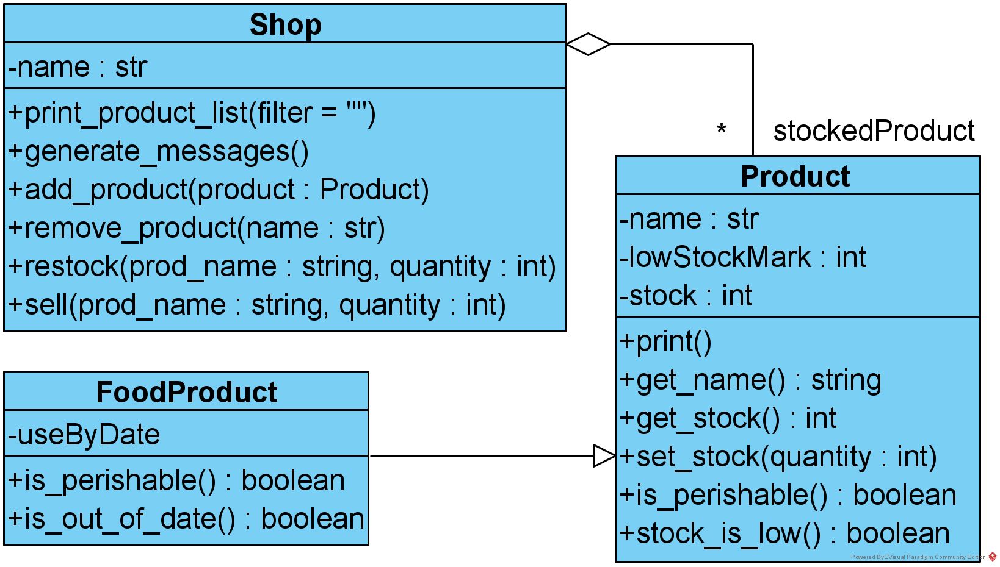

Starting with the solution to the previous lab (yours or the published one), complete the following tasks.
- Modify the Product class so that it uses properties for name and stock.
-
The two changes made on 24/10/24 are shown in red.
Your assignment is to implement a stock keeping application based on a given design.
The application design is shown in terms of classes and relationships between them figure Stock-keeping application class diagram.
Stock-keeping application class diagram Details of the requirements are as follows:
- The Product class should have
- attributes:
- name: a private string variable
- lowStockMark: a private integer variable, representing the quantity below which the stock is considered to be low for this product
- stock: a private integer variable, representing the quantity of this product that is in stock
- methods:
- print: prints the contents of the class in a user-friendly way
- get_name: returns a string representing the name of the product
- get_stock: returns an integer representing the quantity in stock for this product
- set_stock: takes an integer argument and records the quantity in stock for this product
- is_perishable: returns a boolean indicator of whether the product is perishable; the class Product implementation returns False
- stock_is_low: returns a boolean indicator as to whether the stock is lower than the low stock mark
- attributes:
- The FoodProduct class is a subclass of Product and should have:
- attributes:
- useByDate: a private variable of type datetime (in Python module datetime); for non-perishable products the value should be None; you can assume that all the pieces of the same product come from one batch and have the same expiry date
- methods:
- is_perishable: returns True if the use-by date is not None and False otherwise
- is_out_of_date: returns an indicator as to whether the use-by Date has passed
- attributes:
- The Shop class should have:
- attributes:
- name: a private string variable representing the name of the shop
- stockedProducts: a private list variable containing objects of type Product or any subclass of Product (the diamond at the end of the link between Shop and Product in the picture represents aggregation of Product objects in a Shop object i.e. an implied list variable)
- methods:
- print_product_list: takes a string argument representing a filtering instruction, with possible values:
- "" (default) - all products
- "od" - products that are out of date
- "ls" - products for which the stock is low
- generate_messages: prints messages, one for each product that is low in stock and one for each product that is out of date
- add_product: takes an argument of type Product (or any subclass) and adds it to the list of stocked products
- remove_product: takes a string argument representing the product name and removes the product from the stockedProducts list
- restock: takes a string argument representing a product name and an integer argument representing a quantity to be added to the stock for the product; updates the stock for the product accordingly
- sell: takes a string argument representing a product name and an integer argument representing a quantity of the product sold; updates the stock for the product accordingly
- print_product_list: takes a string argument representing a filtering instruction, with possible values:
- attributes:
- All private member variables should have the two-underscore (__) prefix added to their names, as is the Python convention.
- Product and FoodProduct should be in the same file, product.py. Shop should be defined in a file of its own, shop.py.
- A file called main.py should contain
- code that creates a shop with some initial products
- code that runs scenarios covering all the class methods and all the execution paths through the class methods (e.g. if there is an if statement, then there should be a scenario that covers the condition being true and another one that covers the condition being false); one scenario may cover several of these
- comments that indicate how the code in main.py covers the class methods and execution paths
- comments that indicate expected output
- The Product class should have